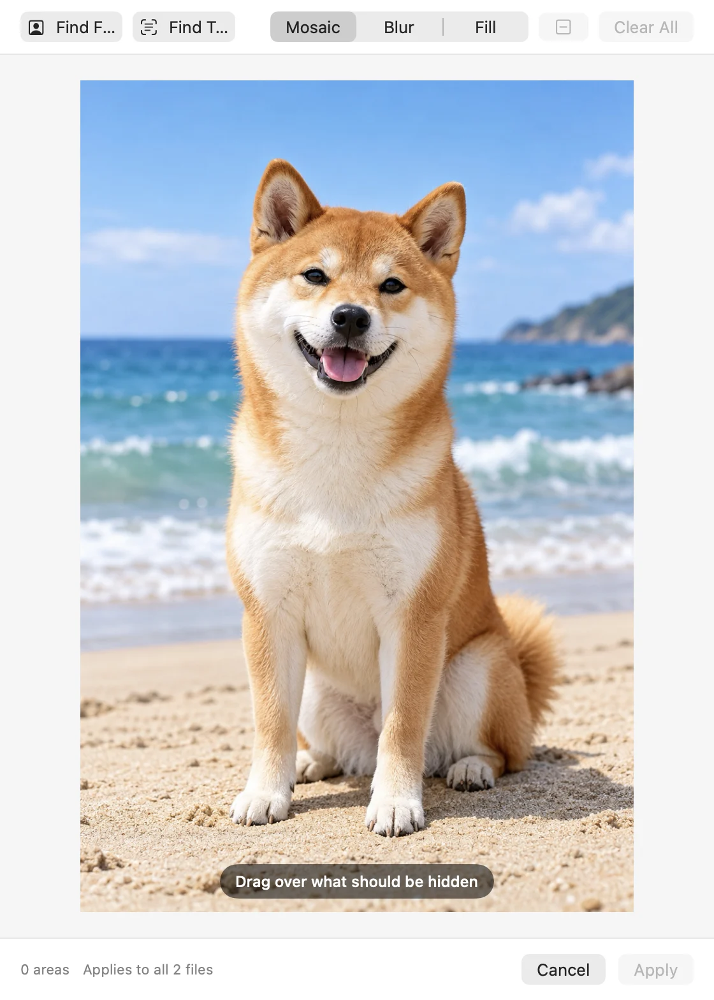
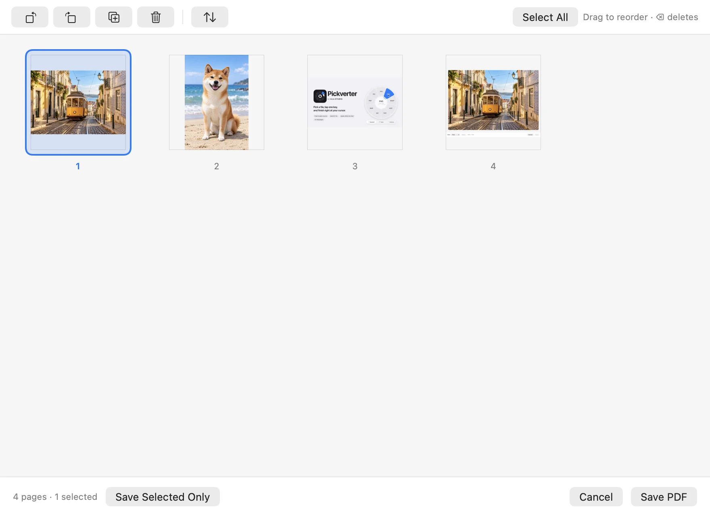
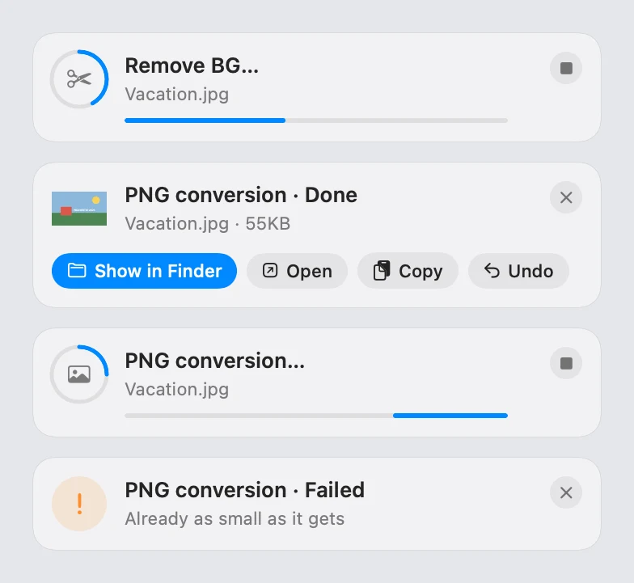

Pick a file
Select one file or fifty in Finder — photos, videos, PDFs, documents, anything.
Pick a file in Finder, tap a key, and a wheel opens right at your cursor. Convert, edit, share — and you never leave the folder you’re in.
Try it: point at a slot · ⇧ ⌘ ⌃ switch rings
No app to open, no dialog to fill in. Pickverter waits in the menu bar until you need it.
Select one file or fifty in Finder — photos, videos, PDFs, documents, anything.
Tap Option, ⌥-click a file, or tap ⇧ ⌘ ⌃ while dragging. The wheel opens at your cursor.
Point at a slot and click. The result lands next to the original or on the clipboard.
The wheel only shows what makes sense for what you picked. Hold ⇧, ⌘ or ⌃ to jump between its rings.
Excel, Numbers, Pages, Keynote and PowerPoint · tables to CSV, TSV, JSON, Markdown, HTML · subtitles SRT, VTT (from SMI, too) · ZIP, TAR.GZ
Right-click a slot to hide it, move it, pin one of its options to the main ring or choose what a plain click runs. Slots can remember the option you used last.
Drag the slider. This cut-out was made by Pickverter itself — no uploads, no account, no waiting in a queue.
Choose once in Settings, or let the wheel ask every time. Originals are never overwritten.
Some jobs need a decision. Pickverter opens a small editor for just that one step, then gets out of the way.
Free or fixed ratios — 1:1, 16:9, 9:16, 4:5 — for photos and clips alike.

Mosaic, blur or fill. Find Faces and Find Text mark them for you.

Drag to reorder, rotate, duplicate or delete, then save the whole PDF or just the selection.

Every job ends in a card: show in Finder, open, copy, or undo in one click.
QuickTime-style handles, frame-accurate or instant.
Title, author, camera, location — losslessly for photos wherever possible.
Files never leave your computer. The only network request is the update check, and you can turn it off.
Heavy jobs wait in a small queue so your Mac stays responsive. The wheel even steps aside while you rename a file.
Originals are never overwritten, and every result card can undo the job.
New versions come from GitHub Releases and are checked — Ed25519 signature, SHA-256 and code signature — before installing.
Arrow keys, number keys, type a format name to jump, Return to run. VoiceOver announces every slot.
Open source under the MIT License. Read the code, file an issue, or suggest a translation fix on GitHub.
| Gesture | What it does |
|---|---|
| ⌥ | With files selected in Finder: open the wheel for them |
| ⌥ + click | Open the wheel for the file you clicked |
| ⇧ ⌘ ⌃ | While dragging files: open the Convert, Tools or Actions ring — drop on a slot |
| ← → 1–0 | Move around the wheel, or run a slot by number |
| ↑ ↓ | Step through a slot’s options on the outer ring |
| png mp3… | Type a format name to jump straight to it |
| ⌥-click · ⌘C · ⌘S | Send this one result to the clipboard or to a file |
| Alt | With files selected in File Explorer or on the desktop: open the wheel for them |
| Alt + click | Open the wheel for the file you clicked |
| Shift Ctrl Alt | While dragging files: open the Convert, Tools or Actions ring — drop on a slot |
| ← → 1–0 | Move around the wheel, or run a slot by number |
| ↑ ↓ | Step through a slot’s options on the outer ring |
| Enter · Esc | Run the highlighted slot, or close the wheel |
| Alt+click · Ctrl+C · Ctrl+S | Send this one result to the clipboard or to a file |
Switch in Settings at any time. Tap a language to see the wheel’s own words.
Yes — no account, no subscription, no ads. The source is open under the MIT License.
No. Every conversion and edit runs on your Mac with Apple’s frameworks and, if you add them, ffmpeg and rhwp. Pickverter only goes online to check GitHub for updates (you can turn that off) and to download ffmpeg or rhwp when you need them.
Accessibility lets Pickverter notice the ⌥ tap and drags anywhere on screen. Finder control lets it read which files you selected. File access lets it read and write files in Desktop, Documents and Downloads without a prompt in the middle of a job.
Releases are currently signed ad hoc (there’s no Apple Developer ID yet), so macOS treats each new version as a new app. Pickverter clears the stale entries and reopens the welcome window so you can switch them back on.
No — images, PDFs, documents and many audio and video jobs work out of the box with Apple’s frameworks. ffmpeg adds formats like WebM, MKV, FLAC, OGG and Opus, plus extra video tools. Pickverter downloads a signed build for you in one click and checks it before use; brew install ffmpeg works too.
Any Mac with macOS 14 Sonoma or later — Apple silicon and Intel, from one universal download.
Quit Pickverter from the menu bar and move it from Applications to the Trash. If Pickverter downloaded ffmpeg or rhwp, remove them first in Settings › Integrations. You can also remove Pickverter from the Accessibility and Full Disk Access lists in System Settings.
Yes. HWP and HWPX documents (Hangul Word Processor) turn into PDF, Word, images, text, Markdown or HTML, and HWP and HWPX convert into each other — password-protected and distribution documents too. The open-source rhwp engine lays out the pages; Pickverter downloads it the first time you convert one.